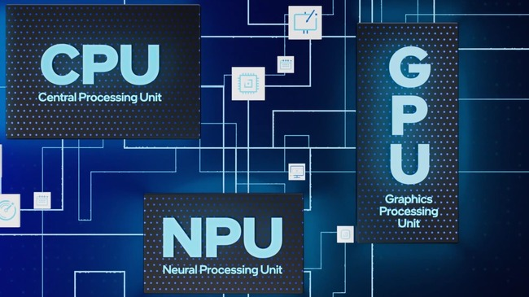
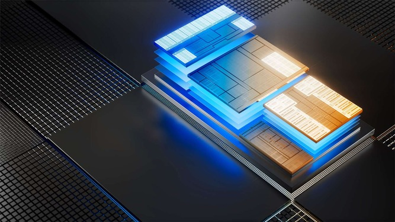

Intel Confirms Panther Lake CPUs with Upgraded Neural Processing Unit
According to recent reports, Intel has confirmed that its next-generation processor architecture, known as Panther Lake, will feature an upgraded Neural Processing Unit (NPU). In this article, we will explore the details of Intel’s fifth-generation NPU.
The year 2024 can be summarized as the year AI became widely integrated into everyday electronic products. However, based on the tech community's reactions, it seems AI has yet to become a key factor in deciding whether to purchase new laptops, as it has only recently entered the laptop segment.
But this is about to change, as Intel is preparing to introduce its Core Ultra 200 desktop processors, which will be the first desktop CPUs to feature a dedicated NPU. Many laptop manufacturers have already started emphasizing this AI feature in their new advertisements.
That being said, regardless of marketing claims, integrated NPUs are significantly slower than any modern Graphics Processing Unit (GPU) available on the market. Internal NPUs can only handle simple Large Language Models (LLMs) or basic Generative AI models, but anything more complex still requires a powerful GPU, preferably with substantial Video RAM (VRAM).
While we don’t have extensive details about future Intel NPUs, we do know that the Panther Lake series, likely to be branded as Core Ultra 300, will feature a new NPU called NPU5. This upgrade follows the NPU3 in Meteor Lake processors and the NPU4 in Lunar Lake chips, marking the third major NPU design update in Intel’s Core Ultra processor family. The NPU4 architecture previously delivered a 3x performance increase for INT8 operations, measured in Trillions of Operations Per Second (TOPS). Here are the generations of Intel's Neural Processing Units (NPU):
- NPU3 – Meteor Lake – 11.5 TOPS
- NPU4 – Lunar Lake – 48 TOPS
- NPU5 – Panther Lake – ? TOPS
According to Phoronix, Intel employees recently confirmed that the fifth-generation NPU will be featured in the upcoming Panther Lake processors. This was clearly stated in Intel’s patch notes shared with the media.
So far, Intel has not officially commented on the performance of its next-gen NPU, but based on the performance jump between NPU4 and NPU3, it is expected that the upcoming NPU will be significantly faster than NPU4. Current NPU performance already exceeds the standard requirements for Microsoft's Copilot+PC, set at around 45 TOPS. However, Microsoft has not made any public statements regarding future changes to this standard.